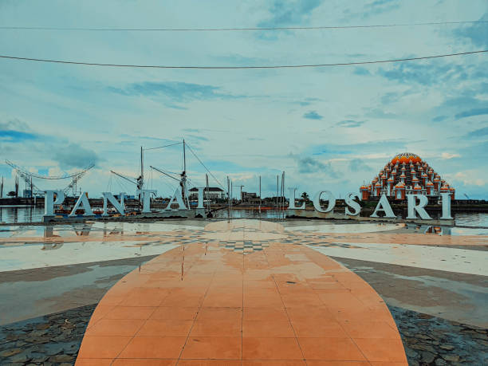
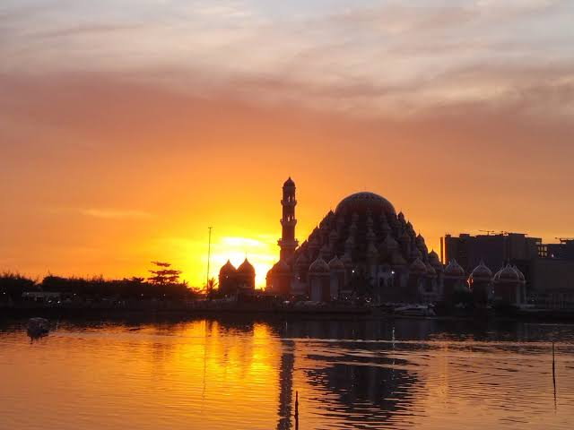

Ikon Pariwisata Bersejarah dan Tempat Terbaik Menikmati Matahari Terbenam di Sulawesi Selatan
Pantai Losari merupakan sebuah pantai ikonik yang terletak di sebelah barat Kota Makassar, Sulawesi Selatan. Berbeda dari pantai pada umumnya, Pantai Losari terkenal karena tidak memiliki pasir pantai, melainkan dikelilingi anjungan beton yang megah untuk tempat bersantai para pengunjung.
Pantai ini sangat terkenal dengan julukan tempat melihat sunset atau pemandangan matahari terbenam paling indah di Indonesia. Di kawasan ini juga terdapat landmark huruf "Makassar" dan "Pantai Losari" serta Masjid Terapung Amirul Mukminin yang menjadi daya tarik tersendiri.
Koleksi foto landmark dan keindahan di sekitar kawasan Pantai Losari:


Beberapa aktivitas seru yang bisa Anda lakukan saat berkunjung:
Alamat: Jl. Metro Tanjung Bunga, Desa Maloku, Kecamatan Ujung Pandang, Kota Makassar, Sulawesi Selatan.
Petunjuk Arah: Berada tepat di pusat kota Makassar. Berjarak sekitar 20 km dari Bandara Internasional Sultan Hasanuddin (sekitar 30-45 menit perjalanan kendaraan motor/mobil).
| Kategori | Detail Informasi |
|---|---|
| Jam Operasional | Buka 24 Jam (Setiap Hari) |
| Tiket Masuk | Gratis / Rp0 (Fasilitas Publik) |
| Waktu Terbaik Berkunjung | 16.30 - 19.00 WITA (Sore Hari) |
| Fasilitas Umum | Area Parkir, Toilet Umum, Mushola Terapung, Warung Makan, Gazebo |
| Transportasi Akses | Angkutan Umum (Pete-pete), Ojek Online, Kendaraan Pribadi, DLL |
Dengarkan contoh audio simulasi alunan gelombang air laut:
Silakan isi formulir di bawah ini untuk reservasi panduan tur lokal di Pantai Losari: